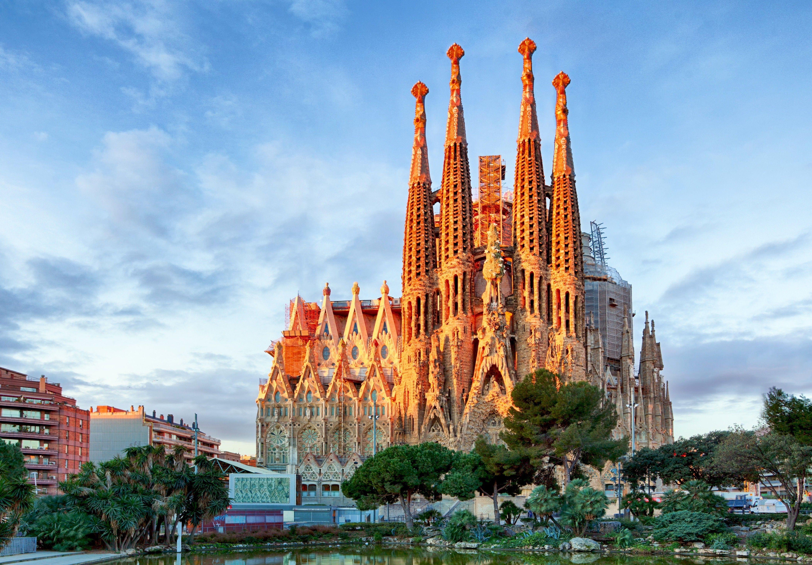

Descubre nuestros destinos
Europa está llena de ciudades increíbles, con historia, cultura y lugares únicos. Descubre tres destinos que puedes visitar en tu próximo viaje.
París, Francia

París es la capital de Francia y una de las ciudades más visitadas de Europa. Es conocida por sus monumentos, museos y su arquitectura.
Entre sus principales atracciones destacan la Torre Eiffel, el Museo del Louvre y la Catedral de Notre-Dame.
Barcelona, España

Barcelona es una ciudad situada en la costa mediterránea de España. Destaca por su arquitectura, sus playas y su ambiente cultural.
Algunos de sus lugares más conocidos son la Sagrada Familia, el Parque Güell y Las Ramblas.
Roma, Italia

Roma es la capital de Italia y una ciudad famosa por su historia y sus monumentos antiguos. Fue el centro del Imperio romano.
Entre sus principales atracciones se encuentran el Coliseo, el Foro Romano y la Fontana di Trevi.